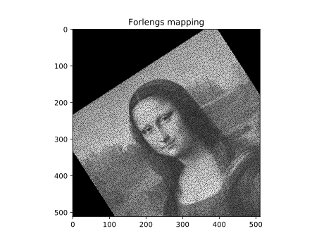
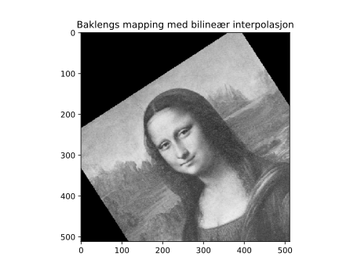

Her legges det ut løsningsforslag til programmeringsoppgavene skrevet i Python
import matplotlib.pyplot as plt
import numpy as np # Her kan man også bruke math-modulen
from scipy.misc import imread
from oppgave3 import forlengs_mapping,baklengs_mapping # for å kunne bruke transformkoeffsientene
th = 33 # grader
th_rad = th*np.pi/180 # radianer - husk at trigonometrise funksjoner antar vinkler i radianer!
## Finne transformkoeffsientene:
# 1 - sett opp rotasjonsmatrisen:
a0 = np.cos(th_rad)
a1 = -np.sin(th_rad)
a2 = 0
b0 = np.sin(th_rad)
b1 = np.cos(th_rad)
b2 = 0
rotasjon_mat = np.array([[a0,a1,a2],[b0,b1,b2],[0,0,1]])
# 2 - sett opp translasjonsmatrisen:
x = 207
y = 421
translasjon_mat_sentrere = np.array([[1,0,x],[0,1,y],[0,0,1]]) # for å sette senter til bildet lik (x,y)
translasjon_mat_tilbake = np.array([[1,0,-x],[0,1,-y],[0,0,1]]) # for å sette senter tilbake til (0,0)
# 3 - multiplisér matrisene for å finne koeffsientene:-
transform = translasjon_mat_sentrere @ rotasjon_mat @ translasjon_mat_tilbake
# Det samme som: transform = np.matmul(translasjon_mat_sentrere,np.matmul(rotasjon_mat,translasjon_mat_tilbake))
## Nå har vi transformkoeffsientene - gir de mening?
## Dette kan man sjekke ved inspeksjon ved å bruke forlengs- eller baklengs-mapping:
img = imread('mona.png',flatten=True)
plt.figure()
img_forlengs = forlengs_mapping(img,transform)
plt.imshow(img_forlengs,cmap='gray',vmin=0,vmax=255)
plt.title("Forlengs mapping")
plt.savefig("mona_rotert_forlengs.svg") # for å lagre bildet i samme mappe.
# Filformatet .svg har bare blitt brukt for å være kompatibel med generingen av html-koden for denne siden. Det går helt fint å bruke andre filformater.
plt.figure()
img_baklengs = baklengs_mapping(img,transform)
plt.imshow(img_baklengs,cmap='gray',vmin=0,vmax=255)
plt.title("Baklengs mapping")
plt.savefig("mona_rotert_baklengs.svg")
plt.figure()
img_baklengs = baklengs_mapping(img,transform,True)
plt.imshow(img_baklengs,cmap='gray',vmin=0,vmax=255)
plt.title("Baklengs mapping med bilineær interpolasjon")
plt.savefig("mona_rotert_baklengs_bilin.svg")
plt.show()
# ...og bildet ser rotert ut - hurra! For å teste om den faktisk roterer den vinkelen som den skal, er det bare å teste med
# andre verdier for th som du kan tenke på forhånd hvordan bildet vil se ut.
# For å sjekke om den faktisk roterer om et gitt punkt, kan man f.eks prøve å rotere om N/2 og M/2.
Programmet kan lastes ned her. Programmet ser også på hvordan det roterte bildet av Mona ser ut etter forlengs- og baklengs mapping (med og uten interpolasjon). Dette stod det ikke om i oppgaveteksten, men gjort her for å demonstrere resultatene etter forlengs- og baklengs-mapping. Bildene som programmet gir, er:
Figure 1: Mona med forlengs-mapping av transformkoeffsientene.

Figure 2: Mona med baklengs-mapping av transformkoeffsientene.
Figure 3: Mona med baklengs-mapping av transformkoeffsientene og bilineær interpolasjon.

import numpy as np
def forlengs_mapping(img,transform):
# Henter ut koeffsientene fra transformasjonsmatrisen
a = transform[0,:]
b = transform[1,:]
a0,a1,a2 = a
b0,b1,b2 = b
N,M = img.shape
resultat = np.zeros((N,M))
for x in range(N):
for y in range(M):
x_ = int(np.round(a0*x + a1*y + a2))
y_ = int(np.round(b0*x + b1*y + b2))
if 0 <= x_ <= N-1 and 0 <= y_ <= M-1:
resultat[x_,y_] = img[x,y]
return resultat
def baklengs_mapping(img,transform,bilinear=False):
# antar transformmatrisen er på formen som i slide 6.
# Dette betyr at matrisen med koeffsientene må inverteres
transform_inv = np.linalg.inv(transform)
a = transform_inv[0,:]
b = transform_inv[1,:]
a0,a1,a2 = a
b0,b1,b2 = b
N,M = img.shape
resultat = np.zeros((N,M))
for x_ in range(N):
for y_ in range(M):
x = a0*x_ + a1*y_ + a2
y = b0*x_ + b1*y_ + b2
if 0 <= x <= N-1 and 0 <= y <= M-1: # for å sjekke om koordinatene kan i det hele tatt brukes
if bilinear: # bilineær interpolasjon - se slide 19. Her velges det koordinater slik at avstanden mellom koordinatene er på én piksel.
# Hvis man tenker på den generelle formen, vil x1 - x0 = 1 (og y1 - y0 = 1), så vi trenger ikke å tenke på deling.
x0 = int(np.floor(x)); x1 = int(np.ceil(x))
y0 = int(np.floor(y)); y1 = int(np.ceil(y))
dx = x - x0
dy = y - y0
p = img[x0,y0] + (img[x1,y1] - img[x0,y0])*dx
q = img[x0,y1] + (img[x1,y1] - img[x0,y1])*dx
value = p + (q-p)*dy
else:
x = int(np.round(x))
y = int(np.round(y))
value = img[x,y]
resultat[x_,y_] = value
return resultat
Programmet kan lastes ned her.
I kommentaren i programmet nevnes det et generelt uttrykk for bilineær interpolasjon. Dette uttrykket er:
$$
f(x,y) \approx f(x,y_0)\cdot\frac{y_1 - y}{y_1 - y_0} + f(x,y_1)\cdot\frac{y - y_0}{y_1 - y_0} \\
$$
$$
p = f(x,y_0) \approx f(x_0,y_0)\cdot\frac{x_1 - x}{x_1 - x_0} + f(x_1,y_0)\cdot\frac{x - x_0}{x_1 - x_0} \\
q = f(x,y_1) \approx f(x_0,y_1)\cdot\frac{x_1 - x}{x_1 - x_0} + f(x_1,y_1)\cdot\frac{x - x_0}{x_1 - x_0} \\ \\
$$
,der f står for innbildetsverdier. I utgangspunktet kjenner vi bare bildeverdiene f(x0,y0),f(x1,y0), f(x0,y1) og f(x1,y1).
Det algoritmen gjør, er å hente ut bildeverdiene fra de nærmeste punktene (det er også mulig å velge punkter lengre unna om man vil, men det holder oftest å velge de nærmeste punktene man kan bruke).
I dette tilfellet, er de nærmeste punktene med 1 piksel avstand mellom x- og y-koordinatene. Dette betyr at
$$
x_1 - x_0 = 1 \\
y_1 - y_0 = 1
$$
i denne algoritmen der man henter ut bildeverdier fra de nærmeste punktene.
Hvis man setter dette inn i uttrykket for bilineær interpolasjon som beskrevet over og setter
$$
\Delta x = x - x_0 \Leftrightarrow \Delta x + x_0 = x \\
\Delta y = y - y_0 \Leftrightarrow \Delta y + y_0 = y
$$
får man:
$$
\begin{align*}
p &= f(x_0,y_0)\cdot\frac{x_1 - x}{x_1 - x_0} + f(x_1,y_0)\cdot\frac{x - x_0}{x_1 - x_0} \\
&= f(x_0,y_0)\cdot(x_1 - x) + f(x_1,y_0)\cdot(x - x_0) \\
&= f(x_0,y_0)\cdot(x_1 - (\Delta x + x_0)) + f(x_1,y_0)\cdot( (\Delta x + x_0) - x_0) \\
&= f(x_0,y_0)\cdot(x_1 - x_0 - \Delta x) + f(x_1,y_0)\cdot(\Delta x + x_0 - x_0) \\
&= f(x_0,y_0)\cdot(1 - \Delta x) + f(x_1,y_0)\cdot \Delta x \\
&= f(x_0,y_0) - f(x_0,y_0)\cdot \Delta x + f(x_1,y_0)\cdot \Delta x \\
&= f(x_0,y_0) + (f(x_1,y_0) - f(x_0,y_0))\cdot \Delta x\\
\end{align*}
$$
På akkurat samme vis kan man vise at
$$
q = f(x_0,y_1) + (f(x_1,y_1) - f(x_0,y_1))\cdot \Delta x\\
$$
og deretter
$$
f(x,y) \approx p + (q - p)\cdot \Delta y
$$
som er algoritmen beskrevet på slide 19 i lysark om geometriske operasjoner.